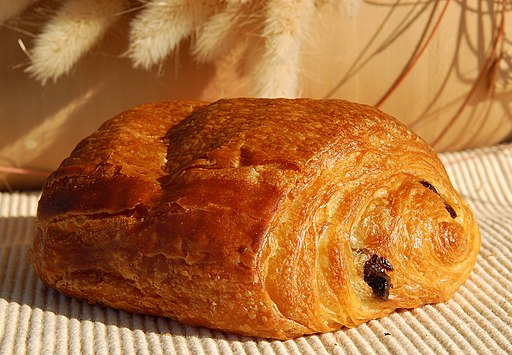

Exploring France
By: Andrea Rivera
This past summer, I had the opportunity to study abroad in France. Here are my two favorite cities that I got to visit while I was there. In this assignment I learned how to make images appear and change with JavaScript. View my GitHub repo here.
Paris
.jpg)
I spent a majority of my time in Paris. Here, I lived with a host family, ate authentic french cuisine, and I became friends with many locals. By the end of my trip, I knew my way around the city pretty well. Paris will always hold a special place in my heart and I feel like I could call it my second home.

{kind=link}
Every morning, I would stop at the local bakery to eat breakfast. Whether it was brioche with jam, baguettes, or chocolate croissants, every pastry was delicious. Above is a picture of a chocolate croissant, or pain au chocolat.
Nice
{kind=link}
{kind=link}
Nice was very nice (see what I did there). I spent a couple of days here, and I absolutely loved it. Everyone I met was incredibly nice and willing to help me with my French. Nice reminded me a lot of home, and I hope to return one day to experience it again.